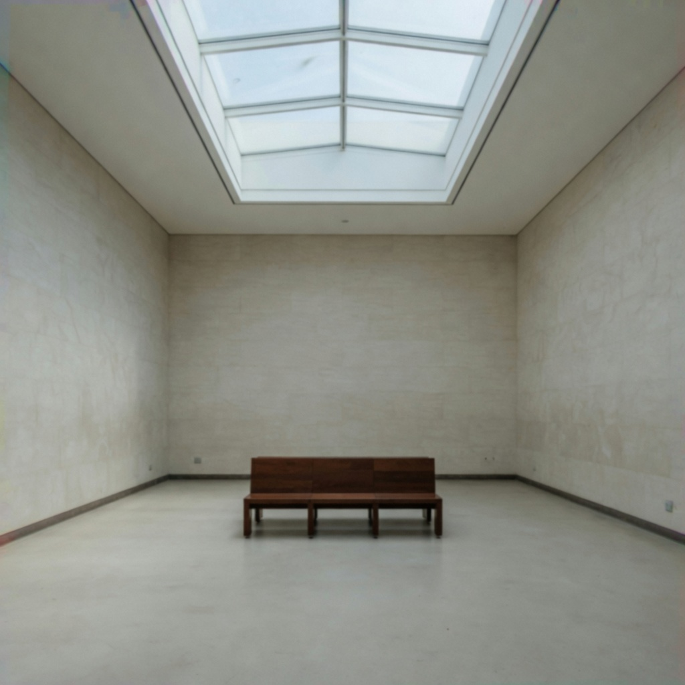

vtelecine_softness · high
telecine softness
A flat, slightly smeared softness associated with film-to-video transfer, often with reduced fine detail and mild chroma smear.
no transfer smear → heavy telecine smear
What it changes
Increasing telecine softness should look like transfer bandwidth loss, not like a portrait diffusion filter.
- fine detail smears flat
- edges lose bandwidth not bite
- mild chroma smear
- image reads transferred, not lens-diffused
Aliases
old-tv softness, film-to-tape softness, telecine smear
Controlled examples
low
medium
high
Nearby
Commonly confused with
- vec_analog_video_texture: Texture is scan grain and chroma crawl. Telecine is bandwidth loss without a required texture field.
- vec_optical_softness: Optical softness is lens-like melt of pores and highlight cores. Telecine is flatter, more electronic smear.
- vec_vhs_bandwidth_loss: VHS loss is consumer-tape chroma collapse. Telecine is a film-to-tape transfer smear.
Studies
Open questions
- Can object high be raised without becoming optical melt?
- How much of the gallery chroma fringe is VHS bandwidth rather than telecine?